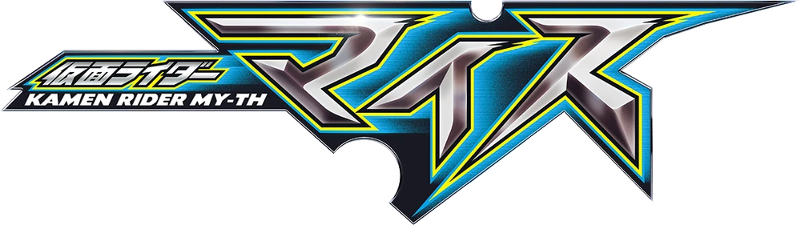

Rumores de da próxima série da franquia
1: O roteiro ficará a cargo de Naruhisa Arakawa, conhecido por seu trabalho em Kamen Rider Kuuga, além de séries como Bakuryuu Sentai Abaranger, Tokusou Sentai Dekaranger e Kaizoku Sentai Gokaiger;
2: O Gato Vermelho será o líder dos Riders do Zodíaco e o principal arqui-inimigo de My-th;
3: O Rider secundário será um Gato Preto;
4: Os rumores reforçam que My-th é o único Rider que utiliza o cinto na diagonal, enquanto os Riders do Zodíaco o utilizam de forma tradicional, ao redor da cintura;
5: Outros rumores apontam que a lista de brinquedos da produção poderá surgir ainda este mês;
6: As informações também reforçam que os itens colecionáveis terão formato de ovo e conterão dois animais associados;
7: O animal ativado poderá variar de acordo com o Driver utilizado;
8: Quando inseridos no Driver de My-th, poderão surgir animais como Rato, Tartaruga, Caranguejo e Lobo;
9: Quando inseridos no Driver dos Riders do Zódiaco, poderão surgir animais como Gato, Coelho, Macaco e Ovelha.